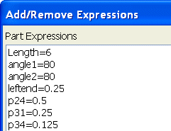
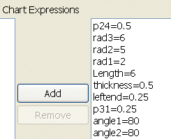

可以在表达式图表中添加/移除表达式。
点击添加/移除。
将打开添加/移除表达式对话框，注意部件表达式与图表表达式之间的不同。
部件表达式为与这个部件关联的所有表达式，可以先选择某个表达式然后点击添加，就可以将表达式添加到图表表达式列表中。

图表表达式是与显示的可视化编辑器图纸页关联的那些表达式，可以先选择某个表达式然后点击移除，就可以将表达式从图表表达式列表中移除。

对于这个练习，您将不会添加或移除任何表达式，所有点击取消以关闭添加/移除表达式对话框。